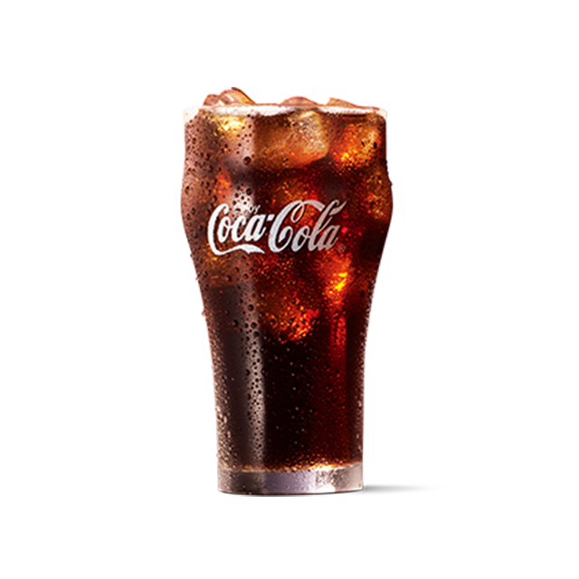

每个人，都有自己的「我就喜欢」。 INDEPENDENT CHALLENGE ENTRY / 2026
A LITTLE CHOICE. A LOT OF YOU.
今天，
偏爱哪一口?
别再说“随便”啦。
凭直觉做几次选择，让你的偏爱自己冒出来。
✳ 6 轮选择 · 大约 1 分钟
可以跳过，也可以随时反悔
FOLLOW YOUR
first bite.


YOU
DO YOU★ ★ ★
NO RIGHT ANSWER. JUST YOUR TASTE.
✦✳
跟着直觉选 ✳ 喜欢不必解释 ✳ 随时可以改主意 ✳ 我就喜欢 ✳ LET YOUR TASTE TALK ✳
01 / THE TASTE TEST这一轮，听你的。
如果现在就能选，你更想把哪一个放进餐盘？
or听直觉的
先做选择，再看结果。没有倒计时，慢慢来也可以。
✦你的偏爱，已经有了轮廓。
现在可以看看本轮结果，也可以回到上一轮修改选择。
体验餐品名称与图片来自官网，非实时门店菜单；不显示未经核验的价格。点餐前以官方渠道为准。
02 / YOUR TASTE, YOUR RULES偏爱这件事，你说了算。
选择留下线索，最后的定义权交给你。
MY TASTE NOTES00 CHOICES
MAKE IT YOURS想改主意？直接调。
拖动倾向条，看看推荐怎么变。
手动修改会标注，原始选择仍保留。
倾向指数只用于本项目排序，不代表真实喜好概率。
下一口，可以这样选。
心动款保留你本轮选过的偏爱，探索款给还没选过的餐品留一个位置。
看看每一轮，我是怎么选的
“跳过”不会改变倾向；同类餐品之间的二选一只影响单品，不代表你否定整个类别。
默认只在当前页面保留，不上传选择记录。
THE RECIPE IS SIMPLE
不用懂算法，
只管表达喜欢。
我们不替你定义口味。
只是把你的选择，整理成一份可以改变的偏爱。
01↔看两口，选一口。
用餐品而不是一长串问卷开始。都想吃、都不想吃，也都是答案。
02◎看到偏爱的轮廓。
六类餐品倾向与每轮记录一起呈现。线索不够时，我们会直接告诉你。
03✦改主意，再正常不过。
撤销、手动调整或排除某个餐品，结果跟着变。你始终拥有最后一票。
THE BEST TASTE IS YOUR TASTE.
好吃这件事，
听自己的。
✳